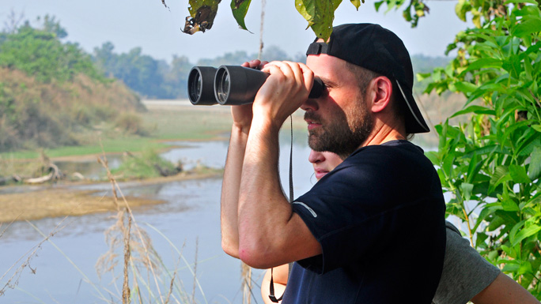
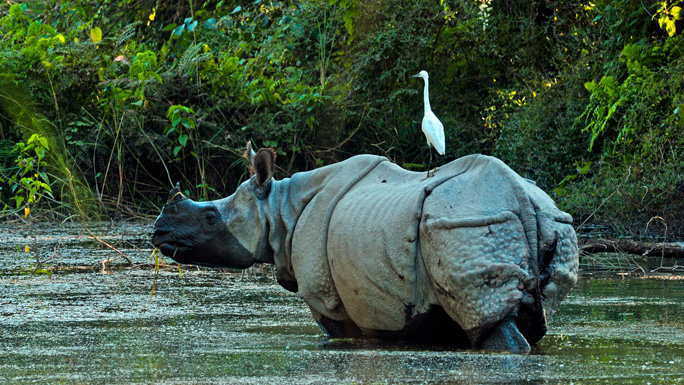
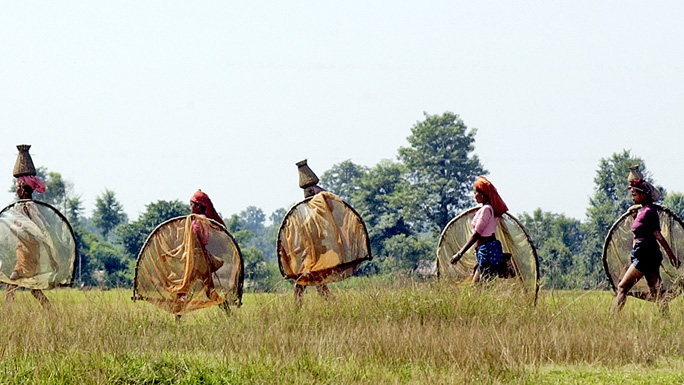
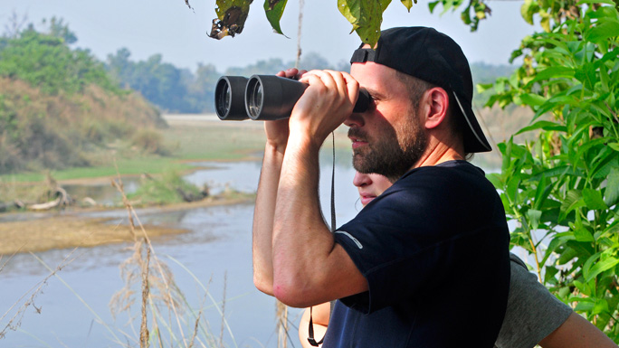
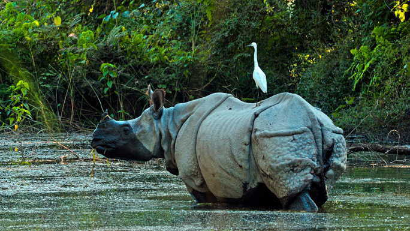
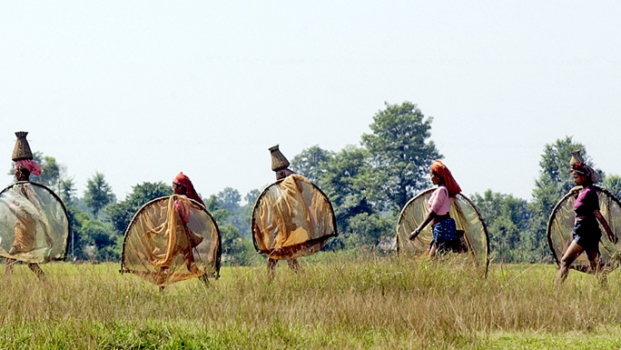

BARDIYA
Ride through the silent jungle catching wildlife by surprise in thelargest national park of Nepal.
Ride through the silent jungle catching wildlife by surprise in the largest national park of Nepal in Bardiya or take nature walk under the guidance of expert naturalists with years of experience.
Combine it with white-water rafting in the longest river of Nepal, Karnali, where you could even spot dolphins or gharial on a lucky day. And meet the charming Rana Tharu and Dangora people of southern Nepal to know more about their culture.
 A trip to Bardiya is certain to stay in your memory as one of the most enduring experiences in Nepal. These jungles in the south-western parts of Nepal are an hour’s flight away with an incredible variety of mammals, reptiles and birds.
Bardiya National Park is also one of the most undisturbed protected areas in the Terai and is home to the endangered Royal Bengal tiger and Nepal's famous one-horned rhinoceros. The park located in the far western district of Bardiya, is bordered by River Karnali in the west, the Churia range in the north, while the River Babai flows right through.
 The varied geographical factors together with the cover of Sal, Savannah forests and grasslands render this region ideal as wild animal habitat. The park hosts 30 different mammals, more than 250 species of birds, and several varieties of reptiles and water animals.
Some of the other animals found here are elephant, swamp deer, blackbuck, gharial crocodile and marsh-mugger crocodile. The exotic Gangetic dolphin is also sometimes seen in River Karnali. Birds include endangered varieties of Bengal florican, lesser florican, silver-eared mesia and sarus crane.
The park offers opportunity of fishing at River Karnali and River Babai. The best time to visit is autumn, winter and early summer when the weather is warm and dry. Bardiya can be reached by road via Nepalgunj or by flight to Nepalgunj or Surkhet from where the park can be driven to.
 Several safari lodges in Bardiya provide excellent accommodation and facilities for guests to enjoy wildlife activities. The nearest cities from here are Nepalgunj and Mahendranagar. Park headquarters Thakurdwara is approximately an hour's drive away from the Nepalgunj-Surkhet road
Combine it with white-water rafting in the longest river of Nepal, Karnali, where you could even spot dolphins or gharial on a lucky day. And meet the charming Rana Tharu and Dangora people of southern Nepal to know more about their culture.
 A trip to Bardiya is certain to stay in your memory as one of the most enduring experiences in Nepal. These jungles in the south-western parts of Nepal are an hour’s flight away with an incredible variety of mammals, reptiles and birds.
Bardiya National Park is also one of the most undisturbed protected areas in the Terai and is home to the endangered Royal Bengal tiger and Nepal's famous one-horned rhinoceros. The park located in the far western district of Bardiya, is bordered by River Karnali in the west, the Churia range in the north, while the River Babai flows right through.
 The varied geographical factors together with the cover of Sal, Savannah forests and grasslands render this region ideal as wild animal habitat. The park hosts 30 different mammals, more than 250 species of birds, and several varieties of reptiles and water animals.
Some of the other animals found here are elephant, swamp deer, blackbuck, gharial crocodile and marsh-mugger crocodile. The exotic Gangetic dolphin is also sometimes seen in River Karnali. Birds include endangered varieties of Bengal florican, lesser florican, silver-eared mesia and sarus crane.
The park offers opportunity of fishing at River Karnali and River Babai. The best time to visit is autumn, winter and early summer when the weather is warm and dry. Bardiya can be reached by road via Nepalgunj or by flight to Nepalgunj or Surkhet from where the park can be driven to.
 Several safari lodges in Bardiya provide excellent accommodation and facilities for guests to enjoy wildlife activities. The nearest cities from here are Nepalgunj and Mahendranagar. Park headquarters Thakurdwara is approximately an hour's drive away from the Nepalgunj-Surkhet road